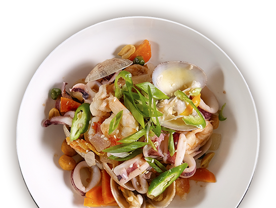
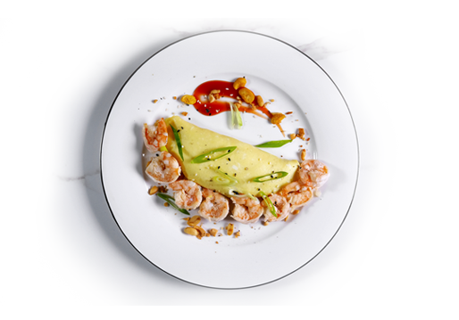
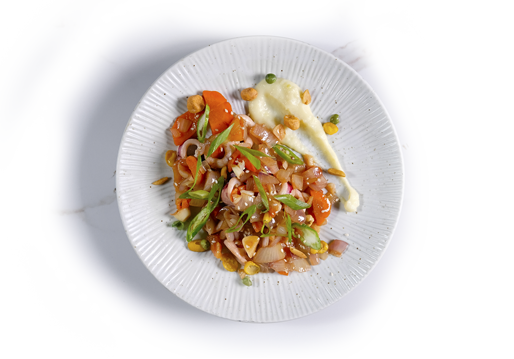
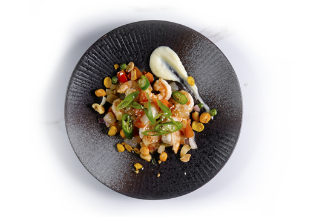
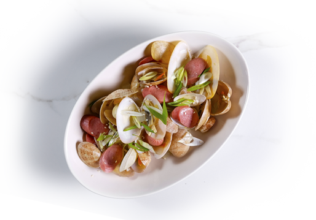
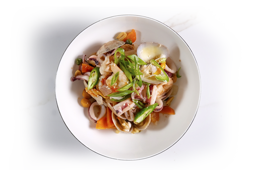

메인 메뉴
chapter 1
씨푸드
모든 요리에는 후식이 무료로 제공됩니다
(쿠키아이스크림 or 커피,녹차,허브차)

Eggy Shrimp 390
에기 쉬림프
Egg Omelet, White Shrimp, Ketchup
치즈오믈렛과 흰살새우를
케첩과 함께 곁들인 요리

Squid 360
스 퀴 드
Medium Size of Squid, Onions, Mashed
중간사이즈의 오징어를 양파와 함께 볶아
으깬 감자와 함께 곁들인 요리

Shrimp 360
쉬 림 프
White Shrimp, Onions, Mashed
흰살 새우와 양파를 함께 볶아
으깬 감자와 함께 곁들인 요리

Sausage Clam 360
소시지 클램
Clam, Vienna Sausage, Rice Wine
바지락 조개와 소시지를
와인에 함께 볶아 만든 요리

ESeafood Mix 620
씨푸드 믹스
Clam, Squid, Shrimp, Onions, Butter
조개와 오징어와 새우를 양파와
함께 버터로 볶아 만든 요리
